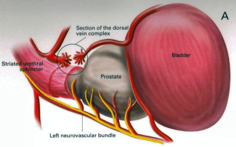

What is Prostate Cancer?
Prostate cancer is the commonest cancer in men with 40,000 cases diagnosed in 2009 in the UK. While it is recognized that many men die with prostate cancer and not because of it, over 10,000 men die every year as a direct result of the disease.
Diagnosis
Patients are usually referred to a urologist by their GP because of an elevated PSA or an abnormal feeling prostate on rectal examination. The PSA blood test is either carried out routinely or in a situation where a patient has presented with urinary symptoms. A history is taken in clinic and an examination is carried out. A urinary flow rate would normally be checked and we would see how well the patient is emptying his bladder. The most important thing to rule out is a concurrent urinary tract infection which can often cause an elevation of the PSA. If the PSA is only marginally elevated (up to 10) one option is to repeat the PSA a couple of months later to see if it continues to increase. If the PSA is significantly elevated or the prostate feels abnormal, an MRI scan of the prostate is often requested prior to biopsy (see below).
Investigation
Transrectal Ultrasound of Prostate and Biopsy (TRUS)
This procedure is carried out in an outpatient setting. A small ultrasound probe is inserted into the rectum and this provides very good views of the prostate. The lining of the prostate is infiltrated with local anaesthetic to make the procedure more comfortable and there are usually 12 biopsies taken. All patients receive antibiotics during the procedure and for a few days after as there is always a risk of introducing an infection via the rectum. Following the procedure, most patients will notice blood in the semen and often in the urine but this will eventually settle down. Some patients will notice that the seminal fluid is brown and this just represents old blood, which will clear after a few ejaculations.
Template Prostate Biopsy
This is another method of obtaining biopsies from the prostate gland. It is not routinely carried out as an initial investigation because it involves a general anaesthetic. With this procedure, multiple biopsies of the prostate are taken via the perineum. These biopsies are guided by an ultrasound probe in the rectum and technology similar to brachytherapy is used (see below). The advantage of this procedure is that multiple biopsies can be taken which increases confidence as to whether cancer is present or not. The disadvantage of this procedure is that it requires a general anaesthetic and needs to be carried out in theatre. The risk of infection is lower but patients are still given antibiotics. The prostate will become slightly swollen and this could interfere with the ability to void. In this situation, patients take an alphablocker medication (see previously) to help relax the prostate and ease any difficult with emptying the bladder.
Gleason Grading of Cancer
This is a method used to denote how aggressive prostate cancer is. It is named after a pathologist called Gleason who devised the system in the 1970s. Originally, cancer was given a grade from 1-5 based on how aggressive it appeared. By definition, this has been reduced to grade 3, 4 and 5. Gleason grade 3 cancer is mild and Gleason grade 4-5 cancer is more aggressive.
Prostate cancer is multi-focal. It can appear in more than one place and each area may have more or less aggressive cancer than another area. Therefore, when a pathologist is looking down a microscopic at prostate cancer they may comment on the 2 most common types of cancers found. This gives what is known as a Gleason score. In one situation, all of the cancer may not be very aggressive, ie., all Gleason grade 3; the patient would then have a Gleason score of 3+3=6. Various combinations can be found; 3+4, 4+3, 4+4 all the way to 5+5. Gleason score 6 cancer is considered mild, Gleason score 7 is intermediate and Gleason score 8 or above is considered aggressive.
Staging
When someone is diagnosed with cancer, investigations are necessary to determine if the cancer is within an organ or whether it has spread. In the case of prostate cancer, we carry out 2 types of investigation to determine if the cancer has gone beyond the prostate.
MRI Scan of Prostate
The is a special scan which looks very closely at the prostate. In essence, an MRI scan is a very large magnet and provides very good pictures of the prostate. It allows the radiologist to determine if the cancer is confined to the prostate or whether it has already gone through the lining of the prostate and if the lymph nodes are involved. Biopsies of the prostate can often cause bruising and this can be mistaken for tumour on an MRI scan. Therefore, it is prudent to wait for at least 6-weeks after biopsies before undergoing an MRI scan to allow any swelling to settle. Occasionally, if there is a high index of suspicion, the patient may have an MRI scan before the prostate biopsy. Not everyone with prostate cancer needs an MRI scan. If the index of suspicion is low, quite often an MRI scan is not required (Gleason score 6 and low PSA).
Bone Scan
This is a nuclear medicine scan where a radioactive dye is injected into a vein. A special scan is then undertaken 3-4 hours after the injection which will show the radioactive dye in the body. Prostate cancer cells in the bone will metabolise this dye more than non-cancerous cells and therefore, areas of cancer can be seen on a scan. We would normally only carry out a bone scan for patients who have a high risk of cancer in the bones. This is usually for patients with Gleason score 8 cancer and above or those with a PSA >15.
Treatment for Prostate Cancer
Described below are the main treatments for prostate cancer. This is a general outline with more detail on my particular area of interest ie.laparoscopic radical prostatectomy. What is described is only a guide and should be used in conjunction with your doctor. For a patient with localised prostate cancer who needs radical treatment, any intervention is designed to stop that patient running into trouble in 10 years time.
The choice of treatment often appears daunting and confusing. Studies have shown there is usually no urgency in deciding what treatment to undertake and patients can wait 6-9 months before undergoing treatment to cure prostate cancer. Follow-up studies have shown that this delay is not significant and the patient should take plenty of time in making this decision. In my clinic, I encourage patients to speak to the oncologists to discuss radiotherapy in detail.
Active Surveillance
The basis of this treatment is that the amount of cancer present in the prostate is low and therefore, the chance of this cancer ever causing trouble is minimal. Urologists are getting much better at predicting which patients need treatment and those who patients do not.
Post-mortem studies have shown a significant number of men in their 60s and 70s have a small amount of low grade cancer present in their prostate. This figure goes up to 80% of 80 year old gentlemen. Therefore, it is possible that the prostate biopsies taken happen to hit a small amount of prostate cancer which would never have caused the patient any trouble. The question is how to identify gentlemen who do not need treatment versus those that do.
Patients suitable for active surveillance include those with a relatively low PSA (<10); those with Gleason 3+3 cancer and those with only a small proportion of cores showing cancer. In this situation, we keep a very close eye on them and they would have their PSA level checked every 3 months. If the PSA remains stable, the patient would undergo template biopsies (see above) 12-18 months after the initial diagnosis. If the PSA goes up before that time, they would have the template biopsy carried out sooner.
If subsequent biopsies show a large volume of cancer or there is Gleason 4 cancer present, radical therapy would be recommended. This approach has been studied closely, particularly in Canada and has been shown to be safe. The single biggest advantage of this approach is that there are no side effects with this treatment as the prostate does not undergo any intervention; however, some patients suffer with stress and worry and feel that they should have treatment. Prostate cancer is usually a very slow growing tumour and any potential delay by undertaking this treatment regime is not significant.
Watchful Waiting
This is a treatment approach used in older patients (>75 years old) who more than likely have prostate cancer because their prostate feels abnormal or they have an elevated PSA. In this situation, we will often initially monitor the PSA. If the levels remain relatively static, this would suggest the cancer is very slow-growing. Therefore, in conjunction with the patient's wishes, we may decide to undergo a period of observation to ascertain how the PSA changes over time. The advantage of this approach is that the patient does not undergo any treatment and consequently avoids any potential side effects. This approach is not ignoring cancer but allowing time to see if the cancer itself will ever cause a patient problems in the future. Prostate cancer in general is a very slow process and a period of observation is reasonable which may avoid subsequent treatments with its associated side effects.
Surgery - Radical Prostatectomy
With radical prostatectomy, the entire prostate is removed and the bladder is rejoined to the urethra (see diagrams A & B below). One major advantage of surgery is that the entire prostate is removed and is analysed under the microscope.
Sometimes, there is more cancer present than the biopsies or MRI scan had predicted. Similarly, there may be a higher amount of high grade cancer present. It is also possible to make a more accurate prediction of outcome as the pathologist is able to determine if the cancer is completely confined to the prostate or if there is cancer left at the resection margins; however, this is a surgical procedure and requires a general anaesthetic. Patients usually have a catheter in place following surgery to allow the bladder to fuse with the urethra. The procedure is described in more detail below under the section 'Laparoscopic Radical Prostatectomy'.
Follow-up after surgery is very simple with regular measurements of PSA levels. As long as the PSA levels are undetectable, no further imaging or biopsies are necessary.
Radical Radiotherapy
This treatment consists of external beam radiation aimed at the prostate and is an outpatient procedure. Radiation needs to be given in small doses and the standard treatment in the UK consists of 35 treatment sessions. Therefore, based on patients receiving their regime during the working week, the whole process will take 7½ weeks.
Quite often, gold markers will be placed in the prostate to allow more accurate delivery of the radiation. Prior to surgery, patients will be given a 3-month course of medication which is designed to suppress the effect of testosterone on the prostate. This approach has been found to be more successful than just giving radiation therapy on its own. The side effects to this treatment include erectile dysfunction and incontinence and it can also cause swelling of the prostate. For those gentlemen who have difficulty with voiding, it is often necessary to carry out an operation to core out the prostate prior to surgery (please see section on TURP). If the radiotherapy fails, it is very difficult to have a radical prostatectomy afterwards, as there will be scarring and fibrosis. In the UK, we tend not to offer surgery in this situation because of the high risks of complications following such surgery.
Brachytherapy
With this treatment, radioactive seeds which are approximately the size of a grain of rice, are placed into the prostate. These seeds slowly release radiation over a couple of months with the aim of killing the cancer cells. This procedure requires a general anaesthetic and the seeds are placed into the prostate via the perineum under the guidance of an ultrasound probe placed in the rectum.
Although the procedure requires a general anaesthetic, most patients are able to go home the same day, thus avoiding repeated trips to the hospital to have external beam radiation treatment. This treatment is not suitable for all patients with prostate cancer. It is offered to patients with lower grade prostate cancer such as 3+3 of 3+4 cancer. Patients with very large prostate glands are also not suitable for this treatment as it is often impossible to get the radioactive seeds into all areas of the prostate. If patients have difficulty voiding due to their prostate, they may require an operation prior to brachytherapy similar to the situation for those having external beam radiation (see above).
Brachytherapy can also cause difficulties with erections (although probably to a lesser extent than surgery) and it can affect urinary continence.
Surgery - Laparoscopic Radical Prostatectomy
This procedure is identical to an open radical prostatectomy except that it is done via key-hole surgery. The advantage of this approach is that the patient has the procedure carried out through 4 small incisions in the abdomen as opposed to a single large incision which is used for open surgery. The single biggest advantage to the patient is that because of the small incision, the vast majority of patients go home the next day and the physical recovery from the operation is much quicker.
A camera is placed in the abdomen which allows a magnified view of the prostate so the procedure can be carried out more accurately. A robot is used to hold the camera and this can be accurately controlled using technology similar to the Wii game console.
I am currently introducing hand-held robotic instruments similar to the Da Vinci robot. This technology is significantly cheaper than the Da Vinci system with the advantage that the operator is in contact with the patient at all times (unlike the Da Vinci system where the surgeon is at a console away from the patient).
Picture shows Mr Donohue during the operation. He has a robot controlled camera holder using a device on his head and a receiver on the TV monitor
Nerve-Sparing Approach
The nerves responsible for erectile function travel through the pelvis between the prostate and the rectum. These nerves are at significant risk of damage during treatment for prostate cancer. In a nerve-sparing approach, the surgeon carries out a dissection very close to the prostate to avoid damaging the nerves; however, if there is a suspicion that the cancer has gone through the lining of the prostate, the dissection has to be carried out further from the prostate and this increases the risk of damage to the nerves.
The diagram opposite represents the nerves as 3 yellow dots but in reality, there are a couple of dozen tiny nerve fibres smaller than a hair which cannot be seen. The majority of men will have erectile dysfunction following this procedure but quite often, the erections will recover - please see section on 'Penile Rehabilitation' below.
The other major side effect of a radical prostatectomy is incontinence. Following discharge from hospital, the day after surgery, the patient will return one week later for the catheter to be removed. Once the catheter is removed, there is always a degree of incontinence. This incontinence is known as stress incontinence and, if a patients coughs or sneezes, a small amount of urine will leak. Patients are taught pelvic floor exercises prior to surgery and once the catheter is removed, they are encouraged to do these exercises regularly. The vast majority of men regain full continence over a matter of weeks to a few months. In my first 100 patients, 95% of men either had full continence or used only one pad for the occasional leak at 12 months post surgery.
Videos
This shows a suture being passed through a large vein that sits on top of the prostate.
VIDEO 1
This demonstrates a nerve sparing approach. The left sided grasper holds the seminal vesicles while the prostate is dissected from the neuro-vascular bundle.
VIDEO 2
The apex of the prostate is cut away from the urethra which surrounds the metal bougie passed via the penis.
VIDEO 3
This video shows the prostate been put into a bag and removed from the body. The incision under the umbilicus is enlarged to allow removal of the prostate. (this video shows 5 ports as opposed to my usual 4).
VIDEO 4
Penile Rehabilitation
This term is a euphemism I picked up while working in America at the Memorial Sloan-Kettering Cancer Center in New York. I participated in ground-breaking research examining treatment regimes to allow the return of erectile function following radical prostatectomy.
I described above how nerve fibres supplying the penis, which come into close contact with the prostate gland, are smaller than a hair. These nerve fibres are very similar to electrical wires with an outer plastic covering and a metal wire in the middle. While manipulating the prostate during surgery, the nerve is very susceptible to injury. Quite often, the inner part of the nerve, similar to the metal wire, will disintegrate. As long as the outer covering of the nerve remains intact, the inner part of the nerve will grow back; however, this nerve grows back very slowly and can take up to 2 years to fully recover. The problem is, without a nerve supply to the penis, it will undergo fibrosis. Even when the nerve regenerates and is able to supply impulses to the penis, the penile tissue has suffered irreversible damage and men therefore suffer with prolonged impotence.
It has been found that if patients in this situation are treated with drugs similar to Viagra, they quite often regain erectile function. The theory is that this medication increases oxygen levels within the penis and consequently, fibrosis to the erectile tissue and any long-term damage is avoided. Thus, when the nerves recover, there is no long-term damage to the penile tissue.
In my practice, I encourage gentlemen in this situation to take regular medication immediately after surgery and I have found that this approach allows recovery of erections; however, this treatment is carried out over a 2 year period. In the meantime, if patients wish to achieve an erection, they can be shown how to inject a chemical directly into the penis. The chemical is similar to the substance that the nerves secrete and results in a very strong erection. Hopefully, the use of this chemical is only temporary.
Unfortunately, not all men are candidates for a nerve-sparing approach. The patients who do best are the ones who have good erectile function prior to surgery, are relatively young and undergo a bilateral nerve-sparing procedure.
Advanced Cancer
If the cancer has unfortunately gone beyond the prostate, treatments have to be directed at all of the prostate cancer cells and not just at the prostate gland.
Hormone Treatment
Prostate cancer relies on the hormone testosterone to grow and therefore, the initial treatment in this situation is directed at stopping the production of testosterone. This is achieved by injecting a chemical which inhibits the production of testosterone by the testicles and it is usually given every 3 months. This causes the equivalent of a male menopause and the side effects can include hot flushes, weight gain and breast tenderness. These side effects are often minimal and the treatment is very successful at inhibiting the prostate cancer cells. Unfortunately, this treatment will not cure prostate cancer but it can often keep it in remission for many years. The efficacy of the treatment is easily monitored by regular PSA testing. At some stage, the PSA will start to rise again and at that time, further treatment regimes are available which are very useful at blocking the prostate cancer cells.
Intermittent Hormone Treatment
One of the side effects of inhibiting testosterone is a reduction in sex drive. An alternative treatment regime is intermittent hormone suppression. This involves the administration of injections to suppress the testosterone. The PSA is then monitored and when it has fallen to a lower level, the treatment is temporarily withdrawn. At some stage the prostate cancer cells will become active and the PSA blood levels will increase. When this happens, the injection treatment is re-introduced. The advantage of this approach is that patients will have periods of time when they are not undergoing injection treatment and will therefore have less side effects. This approach is not for everyone and it needs to be discussed in detail with your doctor.
Locally Advanced Disease
In patients who only have locally advanced prostate cancer with no evidence of spread beyond the pelvis, they can be treated with a tablet (Bicalutamide) which blocks the effect of testosterone on the prostate. The advantage of this approach is there is still testosterone circulating in the body so the patient is less likely to have the side effects associated with low testosterone levels, ie. hot flushes and reduced sex drive. Breast tenderness is a common side effect of bicalutamide and therefore men are given tamoxifen once a week to reduce its occurrence. We are increasingly offering these patients a course of radiotherapy in conjunction with hormone suppression for up to 5 years, as recent studies have shown that this combination is more successful than hormone therapy alone.